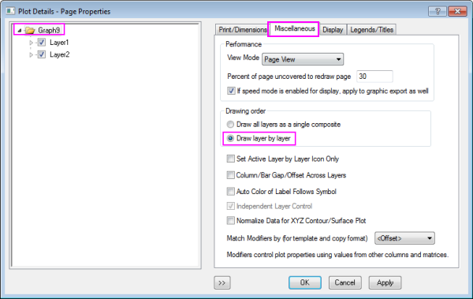
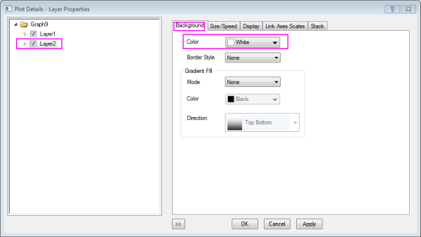

FAQ-830 Wie hinterlege ich einen Layer weiß?
How_to_white_out_a_layer
Letztes Update: 19.09.2016
Es wird angenommen, dass sich in einem Diagramm zwei Layer befinden. Normalerweise wird es gezwungen, alle Daten in beiden Layern anzuzeigen, sogar wenn Layer2 eine Hintergrundfarbe hat. Wenn Sie die Daten von Layer2 auf einem weißen Hintergrund zeichnen möchten, können Sie dies erreichen, indem Sie die Zeichnungsreihenfolge der Layer im Dialog Layerverwaltung oder im Dialog Details Zeichnung festlegen:
Dialog Layerverwaltung
- Aktivieren Sie das Diagramm und wählen Sie im Menü Grafik: Layerverwaltung, um den Dialog Layerverwaltung aufzurufen.
- Wählen Sie im linken Bedienfeld des Dialogs Layer2.
- Gehen Sie zur Registerkarte Anzeige und wählen Sie dann in der Auswahlliste Layer nacheinander zeichnen in der Auswahlliste Zeichnungsreihenfolge, um festzulegen, dass Layer2 erst gezeichnet wird, nachdem Layer1 vollständig gezeichnet wurde. Wenn Sie für 'Layer nacheinander zeichnen' eine Hintergrundfarbe für Layer2 festlegen, dann maskiert der Hintergrund die Elemente von Layer1.
- Wählen Sie die Farbe Weiß unter Hintergrundfarbe und klicken Sie auf Anwenden, um die Hintergrundeinstellung auszuführen.
- Klicken Sie anschließend auf OK, um diese Einstellung fertigzustellen.

Im Dialog Details Zeichnung
- Klicken Sie zum Öffnen des Dialogs Details Zeichnung doppelt auf die Datenzeichnung.
- Wählen Sie den Baumknoten Graph im linken Bedienfeld und gehen Sie Allgemeines, um die Option Layer für Layer zeichnen unter Zeichnungsreihenfolge auszuwählen.
- 
- Wählen Sie den Baumknoten Layer2 im linken Bedienfeld und Sie dann zur Registerkarte Hintergrund, um die Farbe Weiß unter Farbe auszuwählen.
- 
- Klicken Sie auf OK, um die Einstellungen anzuwenden.
| Hinweis: Wenn Sie für Hintergrund Kein ausgewählt haben, werden die Daten aus Layer1 noch sichtbar sein. |
Schlüsselwörter:Layer, Hintergrund, Zeichnungsreihenfolge, Weiß hinterlegen